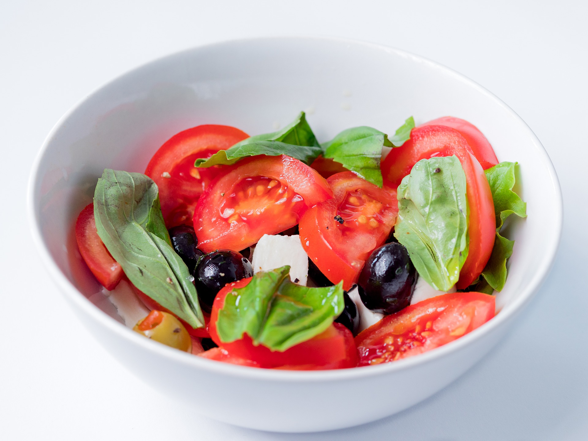
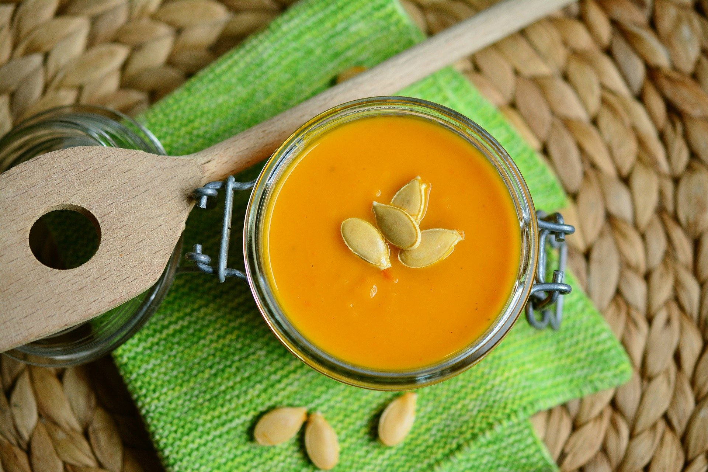
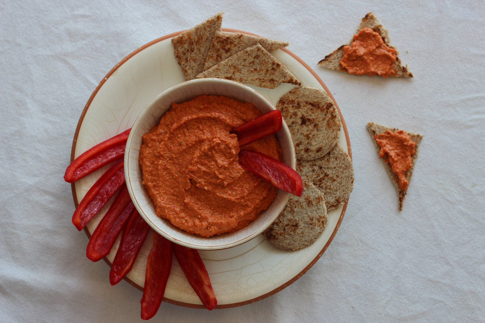

Ensalada Caprese
INGREDIENTES (4 porciones)
PREPARACION
- 1. Lavar y cortar los tomates en rodajas.
- 2. Cortar el queso en cubos.
- 3. Armar la ensalada uniendo tomate, queso, albahaca y aceitunas.
- 4. Colocar aceite, sal y pimienta a gusto.
- Ideal para un día caluroso...

Sopa de Zapallo
INGREDIENTES (2 porciones)
PREPARACION
- 1. Hervir el zapallo en agua y sal hasta que esté cocida.
- 2. Rehogar ajo y cebolla en aceite hasta que esté transparente.
- 3. Agregar la pulpa de zapallo y deshacerla con una cuchara de madera.
- 4. Incorporar 3 vasos de agua, el caldo y dejar hervir unos minutos.
- 5. Retirar del fuego y pasar por la procesadora hasta que la preparación esté lisa.
- 6. Colocarla sobre queso y mezclar hasta que se derrita.
- Ahora si, a disfrutar de esta cremosidad

Muhammara
INGREDIENTES (4 porciones)
PREPARACION
- 1. Asar los pimientos y tostar las nueces.
- 2. Colocar todos los ingredientes en una procesadora.
- 3. Procesar hasta conseguir una pasta.
- Vieron, lo único difícil de esta receta es el nombre...